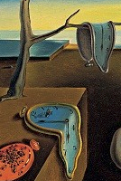
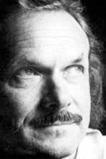

◀Andres Ehin◀  ▼Ülesanded▼  ▶Ilmar Laaban▶
Vaikus ja vägivald Ilmar Laaban Kord ammu ühel tuulsel jahikäigul lõi minus õitsele kohutav õnnOksüümoron ehk vastandväljendus on stilistlik võte, mida on näha palju sürrealistlikus loomes. Tõlgendus jääb lugejale. Siin kontekstis on õnn põhjustatud ühiskonda kohutamisest.ja maastik tardus Üksnes selle kirbe veri veel ringles soontes sahinal püss suitses järeljätmatult hagijas ei haukunud kui vahtis pilvi lihaksHagijas on näljane rahvas 2. maailmasõja ajal. Pilvede vahtimine rõhutab veelgi toidu täielikku puudumist. Mitte haukumine väljendab alla andmist.tihenemas ja kattumas nahaga mil voogas meeleheiten sasit karvMeeleheitest sasitud karv on taotluslikult murdes, seda on näha ka hiljem luuletuses.Sest silmapiirilt paistis tüse torn mis kiikus pikkamööda tühjuse ja võikailt rõõmsaistKordub oksüümoron. Rõõmustati sõju võidu üle, kuid kõik sõjad on võikad.häälitsusist tulvil- olemise vahet nagu hiidkäimla higine päike tahras maad ja laotust kuni ta äkki varjutasid külmad vabaduskaarnadVabaduskaarnad on vabaduse tapjad. Stalini spioonid, kes “kannavad ta silme”. Kaarnad sümboliseerivad surma lääne kultuuris.kandes minu silme ja raige pilte lippudena nokisMurdes “räiged pildid lippudena nokkade vahel”. See jälle rõhutab sõja jõhkrust.Hämarikus mis oli aiva helgid nagu meri on uppunute hõir mu kütikuub vabanes oma raskestKütikuub, mis vabanes oma raskusest tähenab siin, et Stalin oli vabanenud sõja “murekoormast”. Tal oli nüüd võimalik oma nägemust teostada.lõbugakoormat koest ma muudkui jooksin edasi mööda hääletumat nõmme kohates loomi kellel läikivad söed olid südameiks ma lasksin neid nii palju et kodutee lõppeks rohtusRahvas oli vaigistatud, tuli vaid maha lasta dissidente, kelle lootused olid ammu kustunud (nagu põlev puit kustunud söeks). Tapatööd olid nii laialdased, et “kodudee lõppes rohtus”.Kord ammu haarasin ma tühja peekri ja trotsisin ta kalki väljakutsetKord ammu oli Stalin vaene (sümboliks “tühi peeker”), ta lubas saavutada rikkuse (trotsis väljakutset). Siin on ka sõnamäng Stalini suurima vastase, Trotski, kohta.sestsaadik uhab lõppematu sõõm mu raudset suudRaudne suu võib sümboliseerida nii Stalini isikukultust kui ka absoluutset otsustusvõimet riigi üle.mis sirab tähistaeval ja kui mõnd liiga sooja udukogu naeb reostavat maailmaruumi ööd sõnastab raskepäraselt ja selgeltTaaskord oksüümoron. Iseloomustab seda, kuidas Nõukogude ajal nimetati asju väga keeruliste nimedega, mis tegelikult mitte midagi ei ütelnud (nt Eesti Nõukogude Sotsialistliku Vabariigi Siseasjade Rahvakomissariaadi Töölis-Talupoegade Miilitsa Järvamaa osakonna ülem. Praegu oleks see Järvamaa politseülem).MA EITAN SURMA KUID MA JAATAN JÄÄDTa eitab oma rahva surma saatmist, kuid tunnistab loodusjõude, mis said Saksamaale saatuslikuks võitlusel Venemaaga Teises maailmasõjas.
Läbi elektriliste tikksirgete tänavate Andres Ehin Läbi elektriliste tikksirgete tänavateAutori pilge uute Nõukogude ajal elektriga varustatud külade suunaskõnnib vaikne maag.Siin luuletuses võib vaikne maag olla nii lootuse kui ka Päikese sümboliks.Lõokesed laulavad ta habemes.Päikese (maagi) habemeks on tema kiiredLäbi rahvamurru,Lootus läbi rahvaüle kirju asfaldiSüütute laste kriitidega värvitud tänavadkõnnib vaikne, väga vaikne maag. Ta habemes laulavad lõokesedEhinile väga omapärane kordus teises sõnastuses (vt 3. rida)ja kasvavad sinililled. Hüljates tapetud öid, mööda kahisevaid päevi,Lootus unustab möödunud terroriaja (Nõukogude terror) ja valgustab päevi, mil inimesed juba kahisevad tuleviku ootuses.üle kuminate, üle autokatuste, mööda vitriine, üle kantseleilaudade, mis on kaetud kirjutusmasinate vaibaga, kõnnib ülivaikne maag.Lootus kõnnib üle bürokraatia.Ta habe on roheline aas, kus mäletseb rammusaid veiseid. Ta habe on rukkipõld, kus kõrred kõiguvad tuules.Lootus helgest tulevikustHämariku eel, koidu ajal, lükates nagu mantlihõlmu laiali suurte majade pikki varje,Otsene vihje Päikesele: hämariku eel, koidu ajal kiirelt liikuvad varjudkõnnib too nõnda rahulik maag.Kordus viitab sellele, et ka lootus on korduvJa näe, ta vaatab kaabakale suhu ning kohe kasvavad selle suust nartsissid. Ta silitab selga kõveral joomaril ning too kõrgub üle linna kui mastimänd.Kõige halvemast kohast võib sündida midagi ilusat - lootuse ülim põhimõteTaskus tuul, valge pilv ja koidutäht, kõnnib mööda linna vaikne maag.Kogu luuletuse kokkuvõte
Laadin...
Laadin...
Laadin...
Laadin...